Chapter 03
Sampling the Imaginary
Material
Introduction
These are answers and solutions to the exercises at the end of chapter 3 in Satistical Rethinking 2 by Richard McElreath. I have created these notes as a part of my ongoing involvement in the AU Bayes Study Group. Much of my inspiration for these solutions, where necessary, has been obtained from Jeffrey Girard.
Loading rethinking package for visualisations:
rm(list = ls())
library(rethinking)
Easy Exercises
These problems use the samples from the posterior distribution for the globe tossing example. This code will give you a specific set of samples, so that you can check your answers exactly. Use the values in samples to answer the questions that follow.
p_grid <- seq(from = 0, to = 1, length.out = 1000)
prior <- rep(1, 1000)
likelihood <- dbinom(6, size = 9, prob = p_grid)
posterior <- likelihood * prior
posterior <- posterior / sum(posterior)
set.seed(100)
samples <- sample(p_grid, prob = posterior, size = 1e4, replace = TRUE)
hist(samples)
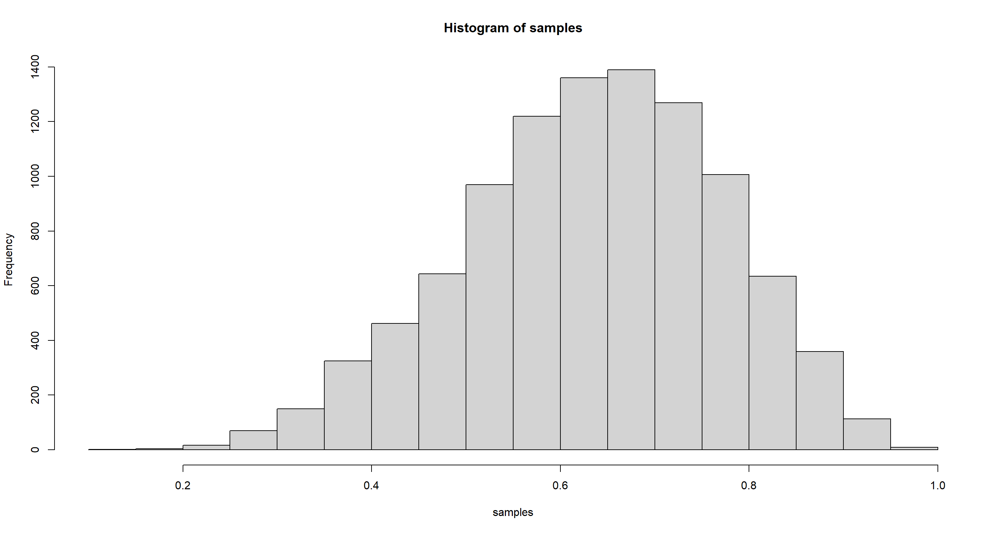
Practice E1
Question: How much posterior probability lies below $p=0.2$?
Answer:
# how the book did it
sum(samples < .2) / length(samples)
## [1] 4e-04
# easier way
mean(samples < 0.2)
## [1] 4e-04
Practice E2
Question: How much posterior probability lies above $p=0.8$?
Answer:
mean(samples > 0.8)
## [1] 0.1116
Practice E3
Question: How much posterior probability lies between $p=0.2$ and $p=0.8$?
Answer:
mean(samples > 0.2 & samples < 0.8)
## [1] 0.888
Practice E4
Question: 20% of the posterior probability lies below which value of $p$?
Answer:
quantile(samples, 0.2)
## 20%
## 0.5185185
Practice E5
Question: 20% of the posterior probability lies above which value of $p$?
Answer:
quantile(samples, 0.8)
## 80%
## 0.7557558
Practice E6
Question: Which values of $p$ contain the narrowest interval equal to 66% of the posterior probability?
Answer:
HPDI(samples, prob = 0.66)
## |0.66 0.66|
## 0.5085085 0.7737738
Practice E7
Question: Which values of p contain 66% of the posterior probability, assuming equal posterior probability both below and above the interval?
Answer:
PI(samples, prob = 0.66)
## 17% 83%
## 0.5025025 0.7697698
Medium Exercises
Practice M1
Question: Suppose the globe tossing data had turned out to be 8 water in 15 tosses. Construct the posterior distribution, using grid approximation. Use the same flat prior as before.
Answer:
p_grid <- seq(from = 0, to = 1, length.out = 1000)
prior <- rep(1, 1000)
likelihood <- dbinom(8, size = 15, prob = p_grid)
posterior <- likelihood * prior
posterior <- posterior / sum(posterior)
plot(p_grid, posterior, type = "l")
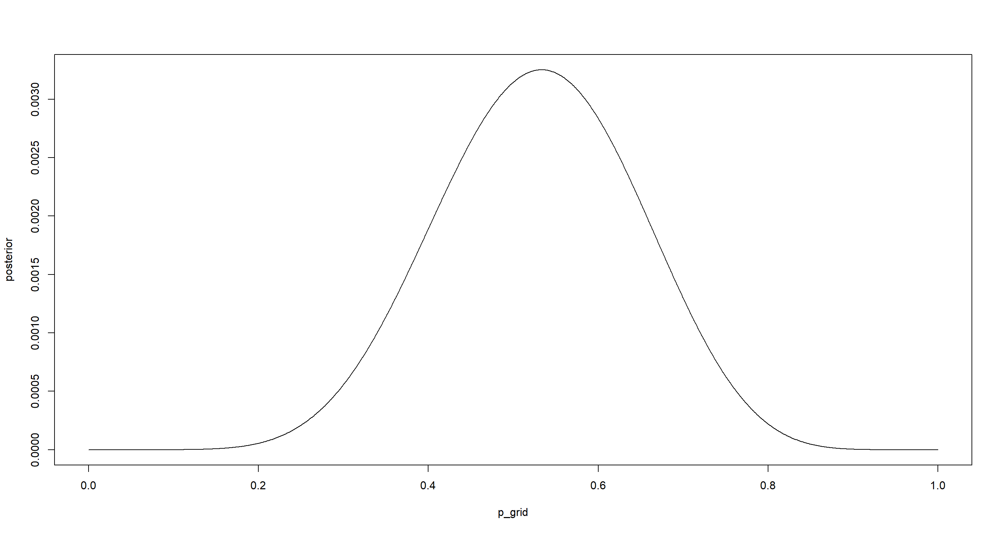
p_grid[which.max(posterior)]
## [1] 0.5335335
Practice M2
Question: Draw 10,000 samples from the grid approximation from above. Then use the samples to calculate the 90% HPDI for $p$.
Answer:
set.seed(42)
samples <- sample(p_grid, prob = posterior, replace = TRUE, size = 1e+4)
hist(samples)
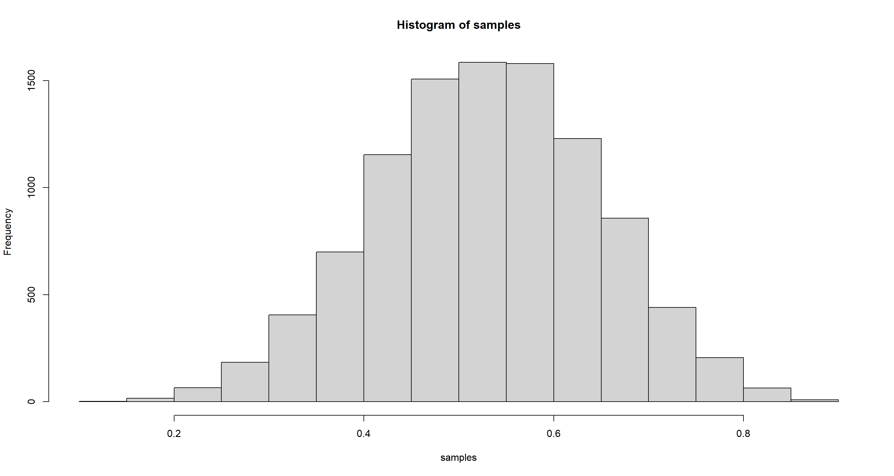
HPDI(samples, prob = .9)
## |0.9 0.9|
## 0.3393393 0.7267267
mean(samples)
## [1] 0.5295147
median(samples)
## [1] 0.5305305
Practice M3
Question: Construct a posterior predictive check for this model and data. This means simulate the distribution of samples, averaging over the posterior uncertainty in $p$. What is the probability of observing 8 water in 15 tosses?
Answer:
n <- 15
set.seed(42)
dumdata <- rbinom(10000, size = n, prob = samples)
simplehist(dumdata)
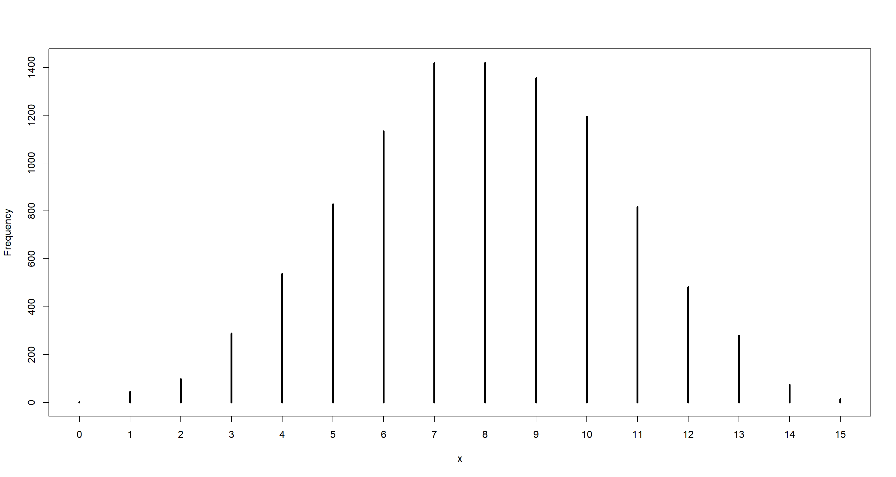
mean(dumdata == 8)
## [1] 0.1419
Practice M4
Question: Using the posterior distribution constructed from the new (8/15) data, now calculate the probability of observing 6 water in 9 tosses.
Answer:
likelihood_6of9 <- dbinom(6, size = 9, prob = p_grid)
prior_6of9 <- posterior
(p_6of9 <- sum(likelihood_6of9 * prior_6of9))
## [1] 0.1763898
## Alternatively, we can generate the data using the same seed as above:
set.seed(100)
dumdata_6of9 <- rbinom(10000, size = 9, prob = samples)
simplehist(dumdata_6of9)
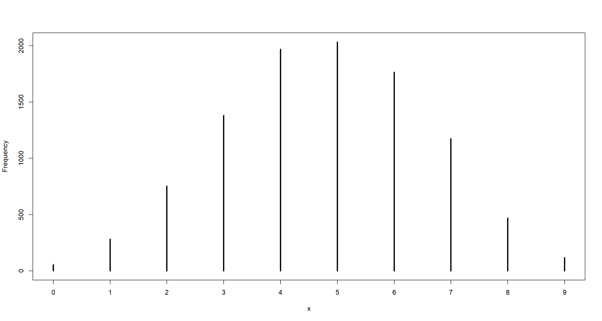
mean(dumdata_6of9 == 6)
## [1] 0.1765
Practice M5
Question: Start over at 3M1, but now use a prior that is zero below $p=0.5$ and a constant above $p=0.5$. This corresponds to prior information that a majority of the Earth’s surface is water. Repeat each problem above and compare the inferences. What difference does the better prior make? If it helps, compare inferences (using both priors) to the true value $p=0.7$.
Part A
Question: Construct the posterior distribution, using grid approximation.
Answer:
p_grid <- seq(from = 0, to = 1, length.out = 1000)
prior <- ifelse(p_grid < 0.5, 0, 0.5)
likelihood <- dbinom(8, size = 15, prob = p_grid)
posterior <- likelihood * prior
posterior <- posterior / sum(posterior)
plot(p_grid, posterior, type = "l")
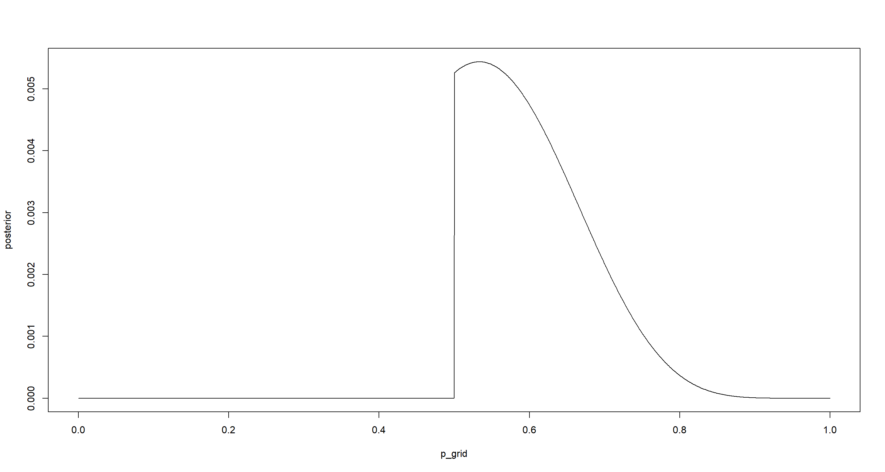
p_grid[which.max(posterior)]
## [1] 0.5335335
Part B
Question: Draw 10,000 samples from the grid approximation from above. Then use the samples to calculate the 90% HPDI for $p$
Answer:
set.seed(42)
samples <- sample(p_grid, prob = posterior, replace = TRUE, size = 1e+4)
hist(samples)
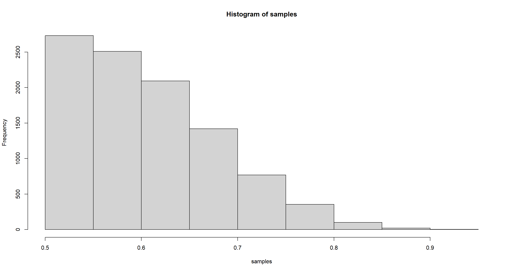
HPDI(samples, prob = .9)
## |0.9 0.9|
## 0.5005005 0.7117117
mean(samples)
## [1] 0.6067921
median(samples)
## [1] 0.5945946
Part C
Question: What is the probability of observing 8 water in 15 tosses?
Answer:
n <- 15
set.seed(42)
dumdata <- rbinom(10000, size = n, prob = samples)
simplehist(dumdata)
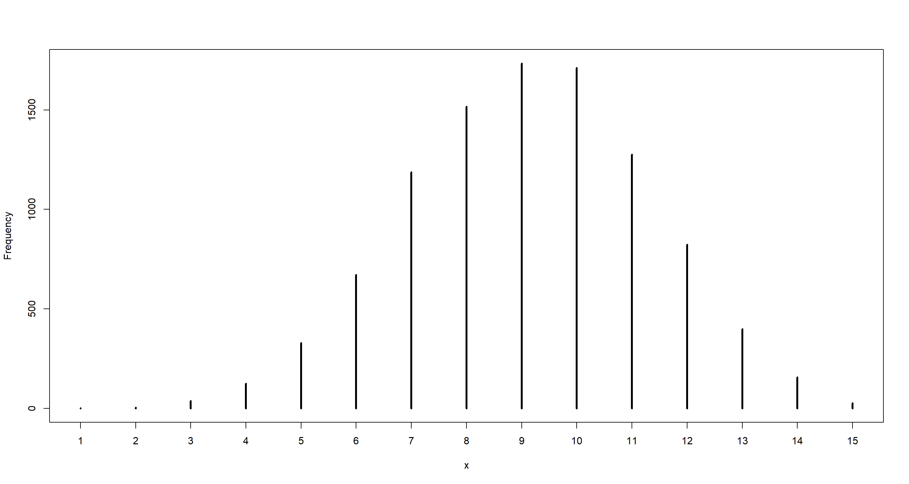
mean(dumdata == 8)
## [1] 0.1516
table(dumdata) / 1e+4
## dumdata
## 1 2 3 4 5 6 7 8 9 10 11 12 13 14 15
## 0.0002 0.0004 0.0038 0.0125 0.0329 0.0671 0.1188 0.1516 0.1734 0.1712 0.1276 0.0823 0.0398 0.0157 0.0027
Part D
Question: Using the posterior distribution constructed from the new (8/15) data, now calculate the probability of observing 6 water in 9 tosses.
Answer:
likelihood_6of9 <- dbinom(6, size = 9, prob = p_grid)
prior_6of9 <- posterior
(p_6of9 <- sum(likelihood_6of9 * prior_6of9))
## [1] 0.2323071
## Alternatively, we can generate the data using the same seed as above:
set.seed(100)
dumdata_6of9 <- rbinom(10000, size = 9, prob = samples)
simplehist(dumdata_6of9)
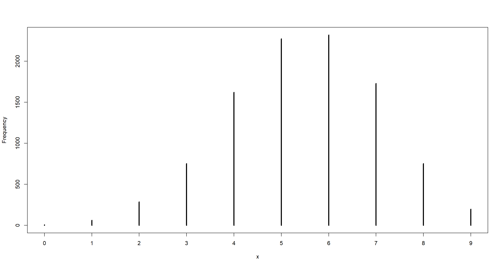
mean(dumdata_6of9 == 6)
## [1] 0.2321
Practice M6
Question: Suppose you want to estimate the Earth’s proportion of water very precisely. Specifically, you want the 99% percentile interval of the posterior distribution of $p$ to be only 0.05 wide. This means the distance between the upper and lower bound of the interval should be 0.05. How many times will you have to toss the globe to do this?
Answer: Solution taken from Richard McElreath and altered by myself.
f <- function(N) {
p_true <- 0.7
W <- rbinom(1, size = N, prob = p_true)
prob_grid <- seq(0, 1, length.out = 1000)
prior <- rep(1, 1000)
prob_data <- dbinom(W, size = N, prob = prob_grid)
posterior <- prob_data * prior
posterior <- posterior / sum(posterior)
samples <- sample(p_grid, prob = posterior, size = 1e4, replace = TRUE)
PI99 <- PI(samples, .99)
as.numeric(PI99[2] - PI99[1])
}
Nlist <- c(20, 50, 100, 200, 500, 1000, 2000)
Nlist <- rep(Nlist, each = 100)
width <- sapply(Nlist, f)
plot(Nlist, width)
abline(h = 0.05, col = "red")
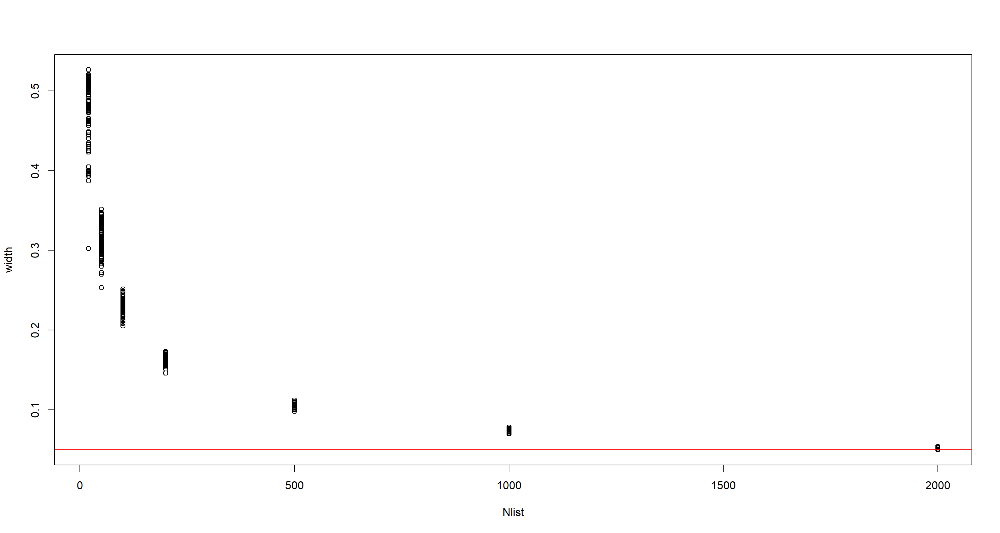
Hard Exercises
data(homeworkch3)
Practice H1
Question: Using grid approximation, compute the posterior distribution for the probability of a birth being a boy. Assume a uniform prior probability. Which parameter value maximizes the posterior probability?
Answer:
n_boys <- sum(c(birth1, birth2))
n_ttl <- length(birth1) + length(birth2)
n_pgrid <- 1000
p_grid <- seq(0, 1, length.out = n_pgrid)
prior <- rep(1, n_pgrid)
likelihood <- dbinom(n_boys, size = n_ttl, prob = p_grid)
posterior <- likelihood * prior
posterior <- posterior / sum(posterior)
plot(p_grid, posterior, type = "l")
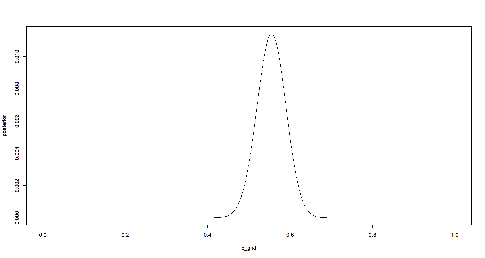
p_grid[which.max(posterior)]
## [1] 0.5545546
Practice H2
Question: Using the $sample()$ function, draw 10000 random parameter values from the posterior distribution you calculated above. Use these samples to estimate the 50%, 89% and 97% highest posterior density intervals.
Answer:
n_ptrials <- 1e4
p_samples <- sample(p_grid, size = n_ptrials, prob = posterior, replace = TRUE)
(hpi_50 <- HPDI(p_samples, .5))
## |0.5 0.5|
## 0.5265265 0.5735736
(hpi_89 <- HPDI(p_samples, .89))
## |0.89 0.89|
## 0.4964965 0.6076076
(hpi_97 <- HPDI(p_samples, .97))
## |0.97 0.97|
## 0.4784785 0.6276276
for (w in c(.5, .89, .97)) {
hpi <- HPDI(p_samples, w)
print(sprintf("HPDI %d%% [%f, %f]", w * 100, hpi[1], hpi[2]))
}
## [1] "HPDI 50% [0.526527, 0.573574]"
## [1] "HPDI 89% [0.496496, 0.607608]"
## [1] "HPDI 97% [0.478478, 0.627628]"
mean(p_samples)
## [1] 0.5545528
median(p_samples)
## [1] 0.5545546
Practice H3
Question: Use rbinom() to simulate 10000 replicates of 200 births. You should end up with 10000 numbers, each one a count of boys out of 200 births. Compare the distribution of predicted numbers of boys to the actual count in the data (111 boys out of 200 births). There are many good ways to visualize the simulations, but the dens() command (part of the rethinking package) is probably the easiest way in this case. Does it look like the model fits the data well? That is, does the distribution of predictions include the actual observation as a central, likely outcome?
Answer:
n_btrials <- 1e4 # birth observations
set.seed(42)
b_sample <- rbinom(n_btrials, size = n_ttl, prob = p_samples)
simplehist(b_sample)
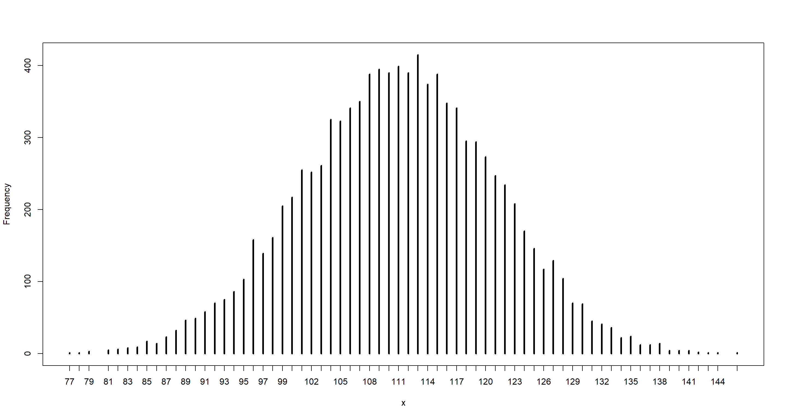
mean(b_sample)
## [1] 110.9792
median(b_sample)
## [1] 111
dens(b_sample)
abline(v = n_boys, col = "red")
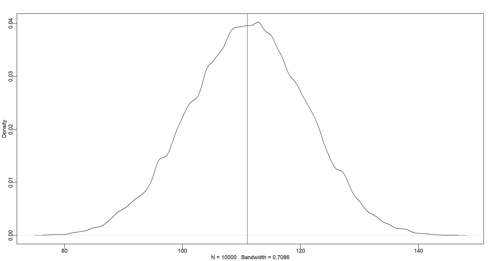
Practice H4
Question: Now compare 10000 counts of boys from 100 simulated first-borns only to the number of boys in the first births, birth1. How does the model look in this light?
Answer:
n_boys_b1 <- sum(birth1)
n_ttl_b1 <- length(birth1)
n_btrials <- 1e4 # birth observations
likelihood <- dbinom(sum(birth1), size = length(birth1), prob = p_grid)
posterior <- likelihood * prior
posterior <- posterior / sum(posterior)
samples <- sample(p_grid, prob = posterior, size = 1e4, replace = TRUE)
set.seed(42)
b_sample <- rbinom(n_btrials, size = n_ttl_b1, prob = samples)
simplehist(b_sample)
abline(v = n_boys_b1, col = "red")
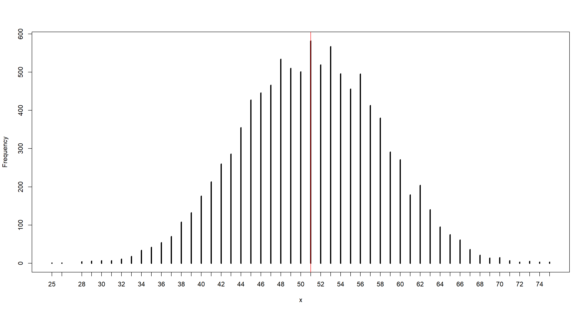
mean(b_sample)
## [1] 51.0102
median(b_sample)
## [1] 51
dens(b_sample)
abline(v = n_boys_b1, col = "red")
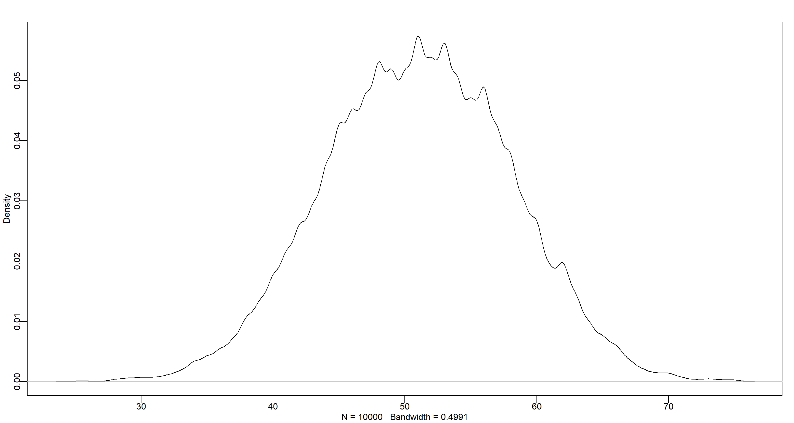
Practice H5
Question: The model assumes that sex of first and second births are independent. To check this assumption, focus now on second births that followed female first-borns. Compare 10,000 simulated counts of boys to only those second births that followed girls. To do this correctly, you need to count the number of first-borns who were girls and simulate that many births, 10,000 times. Compare the counts of boys in your simulations to the actual observed count of boys following girls. How does the model look in this light? Any guesses what is going on in these data?
Answer:
n_ttl_g1 <- sum(birth1 == 0)
n_ttl_g1b2 <- sum(birth2[birth1 == 0])
print(sprintf("there were %d boys born after first girl. There were ttl %d cases", n_ttl_g1b2, n_ttl_g1))
## [1] "there were 39 boys born after first girl. There were ttl 49 cases"
n_btrials <- 1e4 # birth observations
b_sample <- rbinom(n_btrials, size = n_ttl_g1, prob = p_samples)
mean(b_sample)
## [1] 27.1431
median(b_sample)
## [1] 27
simplehist(b_sample)
abline(v = n_ttl_g1b2, col = "red")
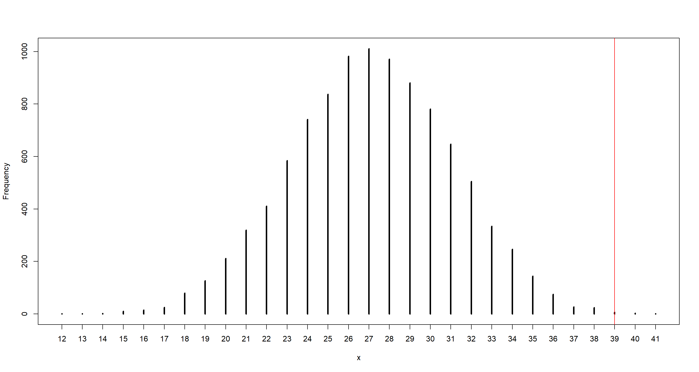
The model underestimates number of boys for the second child after the first girl. Gender of the second child is not independent from the first one.
Session Info
sessionInfo()
## R version 4.0.5 (2021-03-31)
## Platform: x86_64-w64-mingw32/x64 (64-bit)
## Running under: Windows 10 x64 (build 19043)
##
## Matrix products: default
##
## locale:
## [1] LC_COLLATE=English_United Kingdom.1252 LC_CTYPE=English_United Kingdom.1252 LC_MONETARY=English_United Kingdom.1252 LC_NUMERIC=C
## [5] LC_TIME=English_United Kingdom.1252
##
## attached base packages:
## [1] parallel stats graphics grDevices utils datasets methods base
##
## other attached packages:
## [1] rethinking_2.13 rstan_2.21.2 ggplot2_3.3.3 StanHeaders_2.21.0-7
##
## loaded via a namespace (and not attached):
## [1] Rcpp_1.0.7 mvtnorm_1.1-1 lattice_0.20-41 prettyunits_1.1.1 ps_1.6.0 assertthat_0.2.1 digest_0.6.27 utf8_1.2.1 V8_3.4.1 R6_2.5.0
## [11] backports_1.2.1 stats4_4.0.5 evaluate_0.14 coda_0.19-4 highr_0.9 blogdown_1.3 pillar_1.6.0 rlang_0.4.11 curl_4.3.2 callr_3.7.0
## [21] jquerylib_0.1.4 R.utils_2.10.1 R.oo_1.24.0 rmarkdown_2.7 styler_1.4.1 stringr_1.4.0 loo_2.4.1 munsell_0.5.0 compiler_4.0.5 xfun_0.22
## [31] pkgconfig_2.0.3 pkgbuild_1.2.0 shape_1.4.5 htmltools_0.5.1.1 tidyselect_1.1.0 tibble_3.1.1 gridExtra_2.3 bookdown_0.22 codetools_0.2-18 matrixStats_0.61.0
## [41] fansi_0.4.2 crayon_1.4.1 dplyr_1.0.5 withr_2.4.2 MASS_7.3-53.1 R.methodsS3_1.8.1 grid_4.0.5 jsonlite_1.7.2 gtable_0.3.0 lifecycle_1.0.0
## [51] DBI_1.1.1 magrittr_2.0.1 scales_1.1.1 RcppParallel_5.1.2 cli_3.0.0 stringi_1.5.3 bslib_0.2.4 ellipsis_0.3.2 generics_0.1.0 vctrs_0.3.7
## [61] rematch2_2.1.2 tools_4.0.5 R.cache_0.14.0 glue_1.4.2 purrr_0.3.4 processx_3.5.1 yaml_2.2.1 inline_0.3.17 colorspace_2.0-0 knitr_1.33
## [71] sass_0.3.1